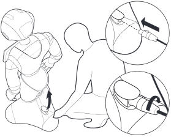

Charging the battery¶
Manual procedure¶
To charge Pepper‘s battery:
| Step | Action |
|---|---|
| Plug the charger to the mains. | |
Move Pepper close enough. If you have to move Pepper while off, see: Moving Pepper while off. |
|
Lift the power hatch. Note: for safety reasons, as soon as the power hatch is opened, Pepper cannot move around. |
|
Plug the charger cable: Put the plug into the socket and turn gently clockwise until the check valve snaps. |
|
Follow the charging progress. When Pepper is fully charged, the charger LED becomes green and the Status LEDs are blinking green. For further details, see: Battery - notifications. |
|
When Pepper is charged enough:
|
{kind=link}
How do I know it is time to charge the battery again¶
Notifications warn you that the battery needs to be recharged.
For further details, see: Battery - notifications.
Automatic procedure¶
If you have a Charging station installed and configured, Pepper is able to find it and to go on it when necessary.
Configuration¶
To configure the automatic usage of the Charging Station see: Charging Station Settings.
Precautions during use¶
While Pepper is on his way
Warning
- Do not push Pepper yourself on the Charging station, or proceed with extreme caution.
Warning
For safety reasons, do not disturb Pepper while he is getting on or off his Charging station.
In particular:
- make sure the Charging station is not moved when Pepper goes on it,
- do not stand in Pepper‘s way when he goes off it.
While Pepper is on the Charging station
Note
When Pepper is on his Charging station, only Activities explicitely authorized on Charging Station can run.
Troubleshooting¶
Charging seems longer than usual, why?
- If the battery is already hot, for example because Pepper has danced for a long time, the charging process may wait for battery cooling before proceeding.